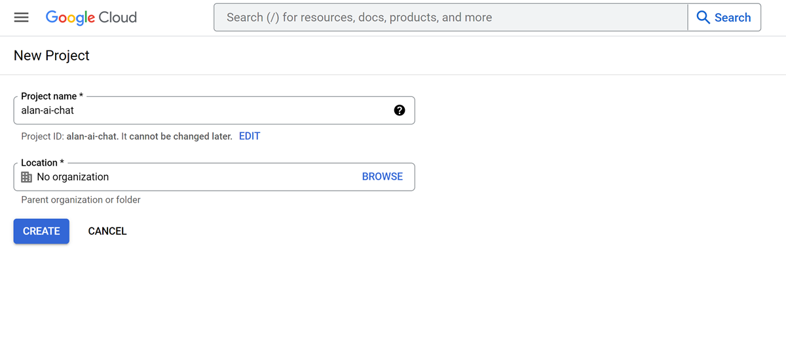
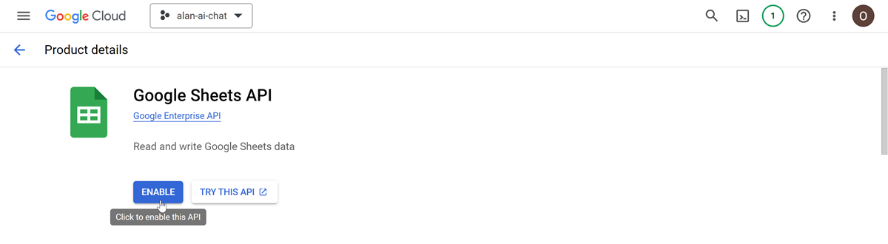

Collect data with the AI chat¶
You can leverage the Alan AI Chat to collect data from users and save this data to a file, database or a third-party app. For example, you may want to get users’ feedback, conduct surveys and so on. Instead of using forms or having a human agent ask the same questions to every user, you can embed an AI chat to automatically get the necessary information and save it for subsequent use.
In this tutorial, we will use the AI chat to collect the user feedback and save this data to a Google sheet.
What you will learn¶
How to collect data with the AI chat
How to get user feedback and conduct surveys using the AI chat
How to integrate Alan AI with Google sheets over the Google API
What you will need¶
To go through this tutorial, make sure you have completed the following tutorial: Create an AI chat for a website.
Step 1. Get an OAuth 2.0 Client ID¶
To write data to a Google spreadsheet, we need to create a project in the Google Cloud Console, enable Google Sheets API for our project and get an OAuth 2.0 Client ID.
Go to the Google Cloud Console. If you do not have an account, create a new one.
At the top of the page, click Create project.
In the Project name field, enter the name for your project and define the project location or leave No organization and click Create.
Open the created project and in the left menu, select APIs and Services > Enabled APIs and services. At the top of the page, click + Enable APIs and Services. Use the search field to locate Google Sheets API and enable this API for your project.
In the left menu, select APIs & Services > oAuth consent screen. The consent screen will only be used by you to get an access token and refresh token. Configure the consent screen for your project:
Select the user type - Internal or External, enter the app name (for example, alan-ai-chat), user support email address, developer contact information and click Save and continue.
Skip the Scopes and Test Users steps and save the consent screen settings.
At the Summary step, click Back to Dashboard.
In the review page, under Publishing status, click Publish app.
In the left menu, select Credentials. At the top of the page, click + Create Credentials > oAuth Client ID. Configure the credentials record:
In the application type, select Web application.
In the Name field, provide any name you want, for example, Alan AI Chat.
Under Authorized Redirect URIs, click Add URI and enter
https://developers.google.com/oauthplayground.Click Create. In the displayed window, click Download JSON and save this file for later.
Next, we need to get a refresh token with appropriately selected scopes for Google APIs:
Go to OAuth 2.0 Playground.
In the top right corner, click the settings icon, select Use your own OAuth credentials and in the displayed fields, enter the values from the JSON file you downloaded previously: OAuth Client ID and OAuth Client Secret. Click Close.
In the main area, at the Select & authorize APIs step, select Google Sheets API v4 > https://www.googleapis.com/auth/spreadsheets. Click Authorize APIs.
In the displayed window, choose an account you used to create the Google Cloud project and allow the app to access your account.
At the Exchange authorization code for tokens step, click Exchange authorization code for tokens, copy the refresh token value and save it for later.
Step 2. Create a Google spreadsheet¶
We need to create a spreadsheet to which we will write data collected with the Alan AI Chat.
With the account you used to create the Google Cloud project, create a spreadsheet. In our spreadsheet, we will have the following columns:
Name
Email
Comments
Step 3. Capture data with the AI chat¶
To the dialog script in Alan AI Studio, add the code to capture the following user’s data: name, email address and a comment the user wants to leave:
intent("$(INPUT* .*(share my feedback).*)", async p => {
// Capturing a name
p.play("Hello and welcome! I'm here to assist you. May I have your name, please?");
let userName = await p.then(getName);
// Capturing an email address
let userEmail = await p.then(getEmail);
// Capturing a message
let userMessage = await p.then(getMessage, {state: {name: userName}});
});
let getName = context((p) => {
intent('$(USERNAME* .+)', p => {
p.play("Could you also provide your email address?");
p.resolve(p.USERNAME.value);
});
});
let getEmail = context((p) => {
const email = /^(([^<>()[\]\\.,;:\s@"]+(\.[^<>()[\]\\.,;:\s@"]+)*)|.(".+"))@((\[[0-9]{1,3}\.[0-9]{1,3}\.[0-9]{1,3}\.[0-9]{1,3}\])|(([a-zA-Z\-0-9]+\.)+[a-zA-Z]{2,}))$/;
intent(`$(EMAIL* ${email.source})`, p => {
p.play("Now, please leave a comment or provide any feedback");
p.resolve(p.EMAIL.value);
});
fallback("Please provide a valid email");
});
let getMessage = context((p) => {
intent('$(MESSAGE* .+)', p => {
p.play(`Thank you, ${p.state.name}! Your input is valuable. If you have any more questions, feel free to reach out.`);
p.resolve(p.MESSAGE.value);
});
});
Here, when the user says any phrase that contains share my feedback, Alan AI sequentially activates the following contexts:
getNameto get the user name. To capture the name value, we are using greedy RegEx in the slot.getEmailto get the user email. To capture the email value, we are using RegEx matching an email address in the slot.getMessageto get the user comment or feedback. To capture the message, we are using greedy RegEx in the slot. On activating this context, we are also passing the obtained name value to it with the state predefined object so that Alan AI can play the user name in a confirmation message.
Step 4. Write captured data to a Google spreadsheet¶
We can capture the data we need; next, we need to write this data to the spreadsheet.
To the dialog script, add the code to get a token for Google APIs with the client ID, client secret and refresh token we obtained in step 1.
Dialog script¶// Getting a Google API token const getToken = async () => { const data = { "client_id": "YOUR-CLIENT-ID", "client_secret": "YOUR-CLIENT-SECRET", "refresh_token": "YOUR-REFRESH-TOKEN", "grant_type": "refresh_token" } try { const response = await api.axios({ url: "https://www.googleapis.com/oauth2/v4/token", method: "POST", data: data}); return response.data.access_token; } catch(error) { console.error(JSON.stringify(error)); } }
Next, we need to write data to the spreadsheet. For this, we will add the
updateSheetValues()function that uses the append method of the Google Sheets API. To send a POST request, we will use the built-in axios library.Do not forget to update the
YOUR-SPREADSHEET-IDandYOUR-SHEET-NAMEvalues in the code below with the ID and sheet name of your Google sheetYou can find the spreadsheet ID in the URL of the spreadsheet, for example:
1NzkFd3S9eLKboOUNr2TBLNr0S32i3yXJJN14EHuHFiM.You can see the spreadsheet name in the bottom left corner of the sheet, for example,
Data.
Dialog script¶// Writing data to a spreadsheet const SHEET_ID = '1RQoRak1PM5m2f4jtDs7w2Ng4OCtuM1q-FIIl6mLYFJQ'; const SHEET_NAME = "Data"; const updateSheetValues = async (name, email, comment) => { const token = await getToken(); const data = { majorDimension: "ROWS", range: SHEET_NAME + "!A1:A3", values: [ [name, email, comment] ] } try { const response = await api.axios({ url: `https://sheets.googleapis.com/v4/spreadsheets/${SHEET_ID}/values/${SHEET_NAME}!A1:A3:append`, method: "POST", headers: { "Content-Type": "application/json", Authorization: `Bearer ${token}`, }, params: { valueInputOption: "USER_ENTERED" }, data: data}); console.log(response.data); } catch(error) { console.error(JSON.stringify(error)); } }
Here, we are first calling the
getToken()function to generate a new token using the refresh token we have. After that, we are using theappend()method to write the data passed to the function to the spreadsheet.Finally, we will update the feedback intent to call the
updateSheetValues()function after all the required data is collected:Dialog script¶intent("$(INPUT* .*(share my feedback).*)", async p => { p.play("Hello and welcome! I'm here to assist you. May I have your name, please?"); let userName = await p.then(getName); let userEmail = await p.then(getEmail); let userMessage = await p.then(getMessage, {state: {name: userName}}); // Calling updateSheetValues() to write data to the spreadsheet updateSheetValues(userName, userEmail, userMessage); });
You can test how it works: in the Alan AI Chat, type: I'd like to share my feedback, then provide a name, email address and message. Once the dialog flow is complete, open the spreadsheet and make sure your data is saved to it.